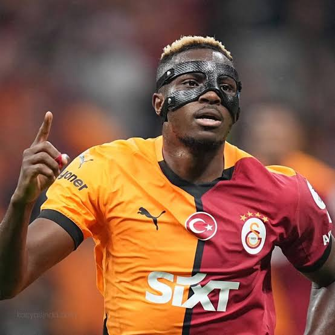

Victor Osimhen, 29 Aralık 1998 tarihinde Nijerya'nın Lagos şehrinde doğdu. Futbol kariyerine ülkesindeki Ultimate Strikers Academy takımında başladı. 2015 FIFA 17 Yaş Altı Dünya Kupası'nda gösterdiği başarılı performans ve attığı gollerle Avrupa kulüplerinin dikkatini çekti.
Profesyonel kariyerinde Wolfsburg, Charleroi, Lille ve Napoli gibi kulüplerde forma giyen Osimhen, hızı ve golcülüğüyle tanındı. Napoli'nin 2022-2023 sezonunda kazandığı Serie A şampiyonluğunda önemli rol oynadı. Nijeryalı futbolcu, kariyerindeki başarıları sayesinde Avrupa futbolunun öne çıkan santrforlarından biri oldu.
Osimhen hakkında daha fazla bilgi için Victor Osimhen'in hayatını inceleyebilirsiniz.